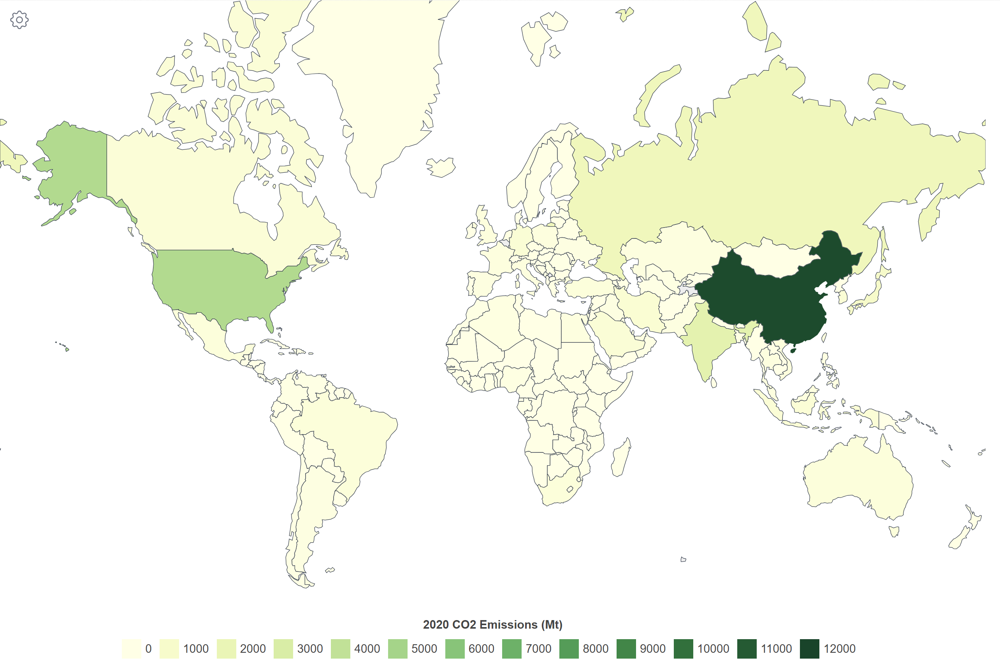
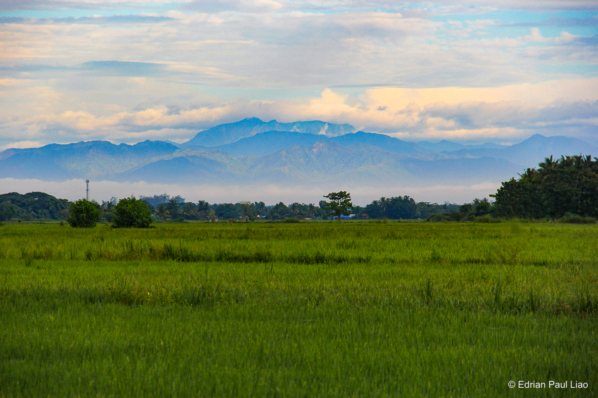
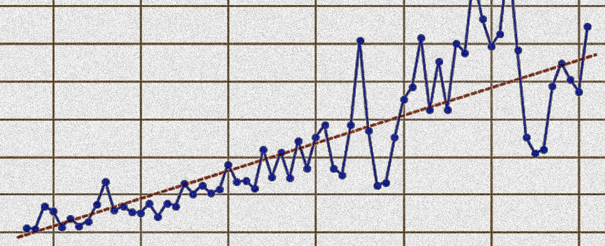
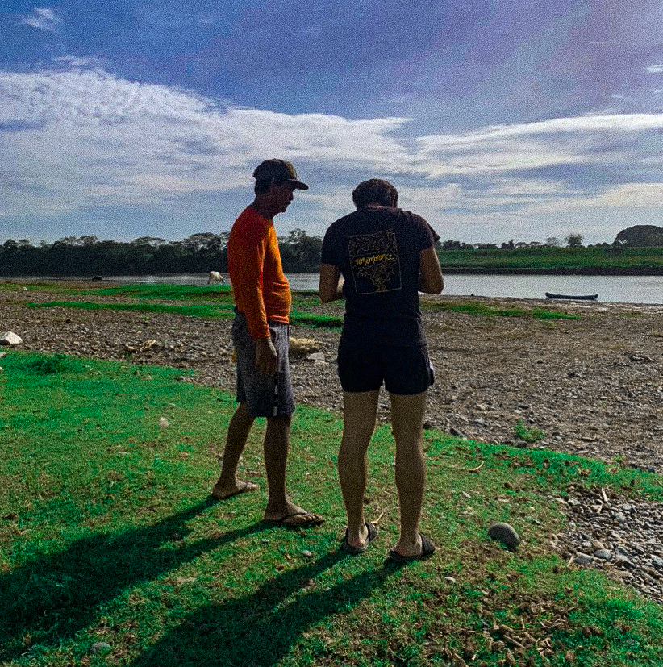

Motivation
While developing countries (excluding China and India) have only contributed 35% of the greenhouse gas emissions last 2011, they are disproportionately facing the negative impacts of climate change,
experiencing extreme heat waves, floods, and other climate-related disasters.

Amidst all the climate change struggles humanity is currently facing, it is not easy to forget the small communities around the world who are also in the same situation but are not as prepared as the
majority. Like us, they deserve the same amount of support–more than what we have, frankly. In hopes of uncovering their narratives, I think we should hear from the people themselves about what they
have to say about this.
With the tools below, I aim to amplify the voices of the unheard giving justice to the most vulnerable.

images.
videos.

data.

interviews.